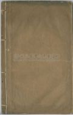

Languages
台文
｜
中文
｜
日本語
｜
English
字體
小
｜
中
｜
大
首頁
/
白話字數位典藏
白話字數位典藏全文檢索
查詢模式
選擇年代
清國時代(1885-1895)
日本時代(1895-1945)
戰後(1945-1969)
1885-1895
1896-1905
1906-1915
1916-1925
1926-1935
1936-1945
1946-1955
1956-1965
1966-1969
1970-1980
1980-1990
1990-2000
2000-2010
2010-
選擇文類
詩
散文
小說
戲劇
傳記
選擇作者
陳清忠
陳清義
編輯部
柯設偕
吳天命
明有德
偕叡廉
周天來
劉華義
王守勇
林茂生
陳添旺
柯維思
王占魁
賴仁聲
陳瓊琚
雪峰逸嵐
吳清鎰
郭水龍
蕭樂善
許水露
葉金木
陳金然
章王由
廖得
鄭連坤
楊士養
潘道榮
梁秀德
劉約翰
周淑慧
高金聲
林燕臣
黃六點
蔡愛義
許有才
主筆
巴克禮
郭朝成
陳鳩水
張基全
陳明清
陳能通
拾穗生
顏振聲
卓恆利
傳道局
胡文池
劉主安
鄭兒玉
Google Search
Yahoo Search
全部
刊名
標題
標題(教羅)
全文
全文(教羅)
作者
第13頁，共13頁(共260筆資料) 0.69544792175293sec
1
...
9
10
11
12
13
To Page
GO
文字列表
圖文列表
排序
日期
文類
刊名
作者
影像
[1909-5 台南府城教會報 文類-傳記 作者--/-]
梁沈先生小傳 [ Niû Tîm Sian-seⁿ Sió-toān ]
梁沈先生小傳1909.05 290卷 p.38先生是屬彰化教會秀水庄ê人。出世tī明治11年。老父是作穡人，所以先生自細也是作穡，m̄ bat讀冊。到16歲ê時得著道理，是因為穡場kap信主ê人ê穡場做伙；tuì án-ni聽著基督ê福音就反悔來拜上帝。20歲入教會，21歲娶先生娘。Tī教會不止熱心，續hō͘會友敬伊當長老ê職。後來人看伊真活動，就舉薦伊入大學。Tī學內受教示3年就出來做灣裡家教會傳道理kap教學ê工一年久；也不止有利益教會kap hia ê學生--仔。自koh入大學一年久，chiah卒業去做坑口教會ê先生。Toahià年半久就染著肺病，食藥無啥功效。教師會派伊去toà鹿港，是...
[1909-5 台南府城教會報 文類-散文 作者--/-]
義大利地動 [ Í-tāi-lī Tē-tāng ]
義大利地動1909.05 290 卷 p.35-36 在西曆舊年12月28號佇義大利國南爿有大地動。照歷代史記所記載未捌拄著到 hiah-ni̍h傷重，因為hit-tia̍p佇遐有teh死15,0000人，其餘著傷關礙--ê不計其數；又閣損害基業也算袂了。論到世間有大氣力 ê物，親像電氣人ē得研究去取來用造電報，電話，電燈，電車，hiah ê路用；總是猶有別物ê 氣力人攏袂曉去治理伊紲取來用。Hiah ê權能猶原猶歸佇上帝ê手裡。有時伊准 in 發作予 in忽然傷害萬人毀壞萬物。伊按怎樣准 in，人卻毋知。伊teh掌管宇宙ê方法人袂曉得是按怎樣，親像有時好人佮歹人忽然相同拄著剿滅；猶過咱通信h...
[1909-4 台南府城教會報 文類-散文 作者--/-]
說要論 [ Soat-iàu-lūn ]
說要論1909.04 289卷 p.32-33Tī早年有一個少年婦人人姓Kám,名激。Tuì細漢親近女學，受先生ê教訓，日日學習道德，不止有靈巧，koh濟濟人o-ló伊ê女德。今已經讀了卒業，就轉去tī伊ê本鄉；無偌久伊ê序大人kā伊匹配hō͘一個作田夫。平素hit 個作穡人是第一gâu激氣，也無受道理ê教示。有一日伊ê婦人人用道理苦勸伊，無疑誤常常kap伊做對敵。原本是向望beh引chhoā伊ê丈夫兩人會來相kap信主，ta̍uh-ta̍uh用溫柔，謙遜做模樣hō͘伊看；若是攏無采工，致到伊ê婦人人直直tàm志 ，續連伊本身也絕望。Koh也無ài kā伊理家，蜘蛛keⁿ絲土eng-ia 攏放...
[1909-4 台南府城教會報 文類-散文 作者--/-]
是舊iáu-kú永新 [ Sī-kū iáu-kú Eńg-sin ]
是舊猶過永新1909.04 289卷 p.29-30人ê風俗無相親像；iáu-kú有一項相親像，就是逐國ê百姓真tuì重舊ê物，也新--ê物猶原真ài。 有甚mi̍h古蹟，古早所起ê厝，抑是炮台、銃櫃，雖是這tia̍p無teh用，iáu-kú較常ài細膩照顧，m̄ ài拆。抑是有甚mi̍h古董人真ài看。有甚mi̍h風俗萬古流傳，人就ài趁。有甚mi̍h古人言就ài講；有甚mi̍h故事，ài聽。 有時百姓刁故意起宮beh囥古董hō͘人看。親像日本國ê京城有起一間大樓thang té逐項ê古董，從中有日本ê 皇帝古早所坐ê轎，真大頂，也有古早人所用ê ke-si。 英國有起真濟間大樓來té古早人...
[1909-4 台南府城教會報 文類-散文 作者--/-]
反悔 [ Hoán-hoé ]
反悔1909.04 289卷 p.26幾若年前tī英國ê西南爿有一隻船犯風，hō͘風湧扑去海墘，靠著 淺，就tiâu tī-hia bē行。那久那hō͘海沙淹沈差不多無thang 向望koh浮thang行出去。總是等到水teh beh koh大tīⁿ，hit時人tī四邊開溝向望海水留入--來thang hō͘船浮出去。到水teh大 tīⁿ hit日真濟人企tī海墘teh看。In看水那久那深，總是船猶原tiâu-teh。到尾hiah ê人忽然間大聲喊搭手掌teh大歡喜。是甚mih緣故？是船有行出海面無？M̄是。是船有浮徙位無？也m̄是。若是án-ni人teh大聲喊，是歡喜甚mih代誌leh！卻是...
[1908-6 台南府城教會報 文類-散文 作者--/-]
澎湖ê消息 [ Phêⁿ-ô͘ ê Siau-sit ]
澎湖ê消息1908.06 279卷 p.53-54 因為咱ê教會ná闊，工就ná缺，所以hiah ê較偏僻ê所在阮牧師罕得去巡。 到這pang停兩年外攏無人去巡澎湖ê教會，所以佇這个4月初2我就落船去媽宮，佇澎湖過四禮拜。貨船到港口就拄著傳道先生，陳Chhun-hô，teh聽候我。對前pang我去巡澎湖到taⁿ有六年久，袂免得著向望hiah濟年ê中間教會有小可加添，總是照看都無。Hiah ê舊底信主ê人有ê過身，有ê冷心倒退；佇媽宮也無加添新來聽ê人。所以這擺佇媽宮只有一人通予我問道理，毋過伊是屬佇Téng-soaⁿ。 初5 ê禮拜日佇媽宮行洗禮予三个囡仔，紲守晚餐。Hit日也有請會友著揀一个...
[1908-4 台南府城教會報 文類-散文 作者--/-]
節氣 [ Cheh-khì ]
節氣1908.04 277 卷 p.34-35 寒食。論守寒食節ê來歷，在早晉國有一個人臣名介子推，前有佮伊ê人君晉文公出外。當hit時晉文公猶袂頂起來坐國位，佇別所在困苦，甚至致到無通食。照流傳teh講：介子推有割伊腳肚肉予伊食。到後來做伙倒來本國，晉文公已經掌權就告賞奉祿 予hiah ê佮伊相同苦難ê人臣。毋知是甚乜因端獨獨無賞介子推。所以介子推毋願在朝做官，也無beh講起俸祿ê事做伊去隱居山林。後來晉文公知家己ê錯誤，有歹款待介子推，就反悔teh beh去請伊出來，總是介子推決斷毋肯出來。晉文公無ta何，用計beh強逼伊出，就放火共伊燒左右ê樹木，總是伊抱樹，甘願予伊燒死，攏無走避。 H...
[1908-4 台南府城教會報 文類-小說 作者--/-]
翅股ê譬喻 [ Si̍t-kó͘ ê Phì-jū ]
翅股ê譬喻1908.04 277卷 p.30 早前有人講原底鳥隻攏無發翅，kan-ta ē跳ē走。若四界去討食，kiám-chhái 拄著貓狗就beh咬去。Hit時beh跳走，毋過走袂赴，因為腳步是細伐，常常袂免得拄著悽慘死失。到後來chi̍t隻ê老鳥為著這號災難就ûn-á teh想，看有甚麼步通脫離。佳哉想出一个計智，就是備辦兩个翼股來掛在身。有一日就匯集hiah ê眾鳥來saⁿ-kap議論，看有甚麼計策通脫離野獸咬食ê災難。老鳥創兩个翼股帶便便就起來講：照我teh打算，創親像我帶這兩支翅，真正大路用。In若beh來咬咱，咱就通出力飛上懸，in就無法咱ta何。眾鳥吐氣應講，Taⁿ 按呢生是閣...
[1908-4 台南府城教會報 文類-小說 作者--/-]
夢見 [ Bāng-kìⁿ ]
夢見 1908.04 277卷 p.25-26 捌有一个好額信主ê婦jîn人，卻熱心服事上帝，不過出無偌濟錢做教會ê路用抑是幫贊sàn-hiong人。伊請一个人顧花園。Hit个顧園--ê猶原熱心服事主，常常講道理做禮拜，教主日學，hit號伊攏歡喜。若論出錢做傳道束脩，修理拜堂佮贊sàn-hiong人，伊攏真甘願。伊捌予頭家娘小可責備講伊出錢做教會ê路用到過頭。總是顧園--ê應講，主疼我到按呢，就應該出ná濟ná好，這攏無甚麼功勞佇teh，其實kan-ta盡本份nā-tiāⁿ。有一暝hit个婦jîn人夢見伊已經過身到天堂。入天堂ê園裡就逐所在攏有師傅teh起厝，有ê真大間，有ê細細間。 伊就問c...
[1908-2 台南府城教會報 文類-傳記 作者--/-]
傳道先生ê小傳 [ Thoân-tō Sian-siⁿ ê Sió-toān ]
傳道先生ê小傳(N̂g Sìn-kî先生記ê.)1908.02 275卷 p.10 1. 黃Chok-pang先生屬佇嘉義ê教會，大溪厝莊ê人，出世佇1869年，自幼無父，七八歲就無母。 佮伊ê胞兄出外佮人蹛，予人倩做小可工。 捌chi̍t擺拄著較重ê病，僕ê先父chhoā伊去醫館就近醫生醫治；醫好倒來，先父切意苦勸伊反悔歸主。先生本是靈巧ê人，就hit時反悔決意綴主，也殷勤學習羅馬文佮漢文。聽道理無偌久，就熱心服事主。先父看伊信主ê模樣，知伊m̄是親像平常信主ê人，對hit時就舉薦伊入大學讀冊，備辦通做主ê工。先生ê做人佮人無仝，伊ê年歲雖然是少，品行端方氣慨。對伊入學就殷勤讀冊暝日無厭，...

[1908-1 台大楊雲萍文庫白話字史料(編修) 文類-散文 作者--/-]
(54)
身體理的總論 [ Sin-thé-lí ê Chóng-lūn ]
...
[1908-1 台南府城教會報 文類-傳記 作者--/-]
羅Khèng-hoâi先生小傳 [ Lô͘ Khèng-hoâi Sian-siⁿ Sió-toān ]
羅Khèng-hoâi先生ê小傳1908.01 274卷 p.5-6 佇1870年伊出世佇台中ê潭仔墘ê大埔厝莊。細漢ê時老父是作穡人；伊13歲有讀3年ê冊，十六歲就佮老父作穡。到20歲有搬落來邱厝仔莊徛起chi̍t年；就閣紲佇橋仔頭莊作田耕穡。Hit年伊22歲，真慘；3月死老父，8月死chi̍t个第二ê小弟，12月死老母。對按呢就無作穡。佇hit時兄弟七人伊是siāng-大ê，第四个予人過房siāng厝內；其餘5个小弟攏伊chhiâⁿ-tî ê。對 hit時嫌厝歹蹛，就閣徙佇公館仔莊，徛佇遐嫌無趁錢，就徙來東大墩Khó-pîⁿ蹛。拄著日本人beh來，就毋敢蹛佇公所ê所在；就閣徙過莊去，就徙來...
[1907-9 台南府城教會報 文類-小說 作者--/-]
摩氏 [ Mō͘-sī ]
摩氏1907.09 270卷 p.70-72Tī倫敦城ê東旁有濟濟猶太人作夥 tī-hia 企起，較大面是teh做生理；總是oh得趁食。某日有一個名摩氏tī街路teh行，真趕，若親像破病，本身家己teh唸講，天氣無到偌寒，有出日，我thài-thó寒到án-ni？但m̄知beh àn-choáⁿ？驚了無力 thang行到厝。今仔日做這m̄成生理，koh無啥人買，利無聲thang o；人聽了也m̄知伊teh賣啥貨。腹肚枵到扑結kiû求，真正可憐事ah！往過若趁無食，伊ê 厝邊提淡薄贊伊，今chit moá無，因為 tī in ê中間失體面，一項無後生，koh 大查某子去嫁基督徒。厝邊攏嫌伊，准伊...
[1907-9 台南府城教會報 文類-傳記 作者--/-]
台南長老黃月德ê小傳 [ Tâi-lâm Tiúⁿ-ló N̂g Goa̍t-tek ê Sió-toān ]
台南長老黃月德ê小傳1907.09 270卷 p.67台南城黃月德去天--裡--啦！雖然人咱無koh看著，總是伊ê模樣iáu tī--teh。伊有來聽道理，tī 1881年，hit時38歲，甘牧師行洗禮hō͘伊；到1896年hō͘兄弟姊妹揀伊做執事，後來高升長老。滿任，眾人留伊，伊就koh盡長老ê職到一世人。近來起胃病傷重，就tī西曆8月2日離開世間，享壽65歲。這人無tī--teh，實在 thang煩惱，伊盡忠服事教會，教會失落伊ê幫贊，常常暗chīⁿ 幫助散hiong人，今hiah-ê人無thang koh受伊ê好款待--啦！In家內自然iáu有憂悶，thang歡喜thang受安慰--ê,...
[1907-8 台南府城教會報 文類-傳記 作者--/-]
徐先生春枝ê小傳 [ Chhî sian-siⁿ Chhun-ki ê Sió-toān ]
徐先生春枝ê小傳1907.08 269卷 p.60-61春枝徐先生是鳳山縣，竹仔腳下pho͘庄ê人，細漢死老父，老母koh嫁；hit時無thang依倚，姑不chiong著去佮人toà ，做工趁食，伊ê頭家是竹仔腳庄Hoan-pô-chek (番婆叔)，hit時伊得著道理就續chhoā伊去聽。Tī同治十年也bat讀過小學，拜呂清暉做先生。治1873年3月16號，就是同治12年2月8日，對李牧師受洗禮入聖教；hit時抵20歲。到同治13年台南ê大學欠學生，人看伊是可取，大家舉薦--伊，就hō͘牧師叫伊來府城讀冊，學習道理，資質iáu好，所以比別人不止gâu 讀。光緒6年就出業，hit時先生28歲。...
[1907-8 台南府城教會報 文類-散文 作者--/-]
大家協力 [ Tāi-ke Hia̍p-lek ]
大家協力1907.08 269卷 p.57-58幾若年前，日本kap俄羅斯交戰，日本直直較贏，俄羅斯直直較輸。Hit時俄羅斯有一個真gâu ê元帥名號做巨羅八根，伊近來有著一本冊記載in兩國交戰ê事。從中有論一項，就是teh問看啥事俄羅斯常常較輸，攏無較贏；因為俄羅斯是大ê國，m̄是小可ê國。卻有濟濟項ê因端；照大人講有一項真要緊，就是因為俄羅斯本國ê百姓無體貼in ê兵ê事，濟濟m̄知in teh交戰是因為啥事也無常常接著輸贏ê消息thang kap in ê兵同心歡喜同心憂悶。 日本國ê百姓m̄是án-ni，in tī in ê本國逐人攏知影不止ài較贏in ê對敵，攏ài勉勵兵丁著真好膽...
[1907-3 台南府城教會報 文類-散文 作者--/-]
安醫生娘 [ An I-seng niû ]
安醫生娘1907.03 264卷 p.17-18 十二月27號，舊曆11月12日，安醫生娘佇蘇格蘭 過往。 安醫生娘是蘇格蘭人，佇1847出世。伊少年ê時gâu讀冊，學做先生；雖然後來著料理家事，伊猶過有愛教冊ê心。親像佇旗後teh教日本人，到致病ê時猶過愛教， 通解悶。佇1882出來台灣匹配安醫生。對彼時不止致意鼓舞醫館ê代誌。原本佇舊樓設法予病人學白話字，以及鬥贊醫生做幾nā項零星ê工。日本來ê時有得著一塊地，通起新醫館； hit-tia̍p伊不止出力鬥料理起造新醫館ê事。起了真歡喜，閣較通照心所愛；毋nā看顧病人，也有照顧學生ê品行。起好無偌久醫生佮醫生娘倒--去祖家歇睏。到閣來台灣就...
[1906-1 台大楊雲萍文庫白話字史料(編修) 文類-詩 作者--/-]
(66)
頌主神詩(客語) [ Siùng Chú Shîn Si ]
...
[1911-1 台大楊雲萍文庫白話字史料(編修) 文類-散文 作者--/-]
(46)
訓蒙淺說 (II) [ Hùn Bông Chhián Soat (II) ]
...
[1914-1 台大楊雲萍文庫白話字史料(編修) 文類-小說 作者--/-]
(35)
長遠兩友相論 (Two Friends) [ Tiông oán Lióng-iú Siong-lūn ]
...
第13頁，共13頁(共260筆資料)
1
...
9
10
11
12
13
To Page
GO
數位典藏國家型科技計劃
拓展台灣數位典藏計畫
版權所有 國立台灣師範大學 台灣文化及語言文學研究所©2008
10610 台北市和平東路一段162號│TEL 02-7734-5516│Fax 02-2358-2461
計劃簡介
典藏特色
執行架構
計畫典藏數位化流程
成員介紹
台灣白話字發展簡介
巴克禮牧師與《台灣教會公報》
廈門話字典-杜嘉德
白話字教學-打馬字
中國南方白話字發展
台灣基督教長老教會簡表
台灣基督教長老教會教會歷史委員會
《北部台灣基督長老教會教會ê歷史》
關於陳清忠
白話字文學：台灣文學的早春